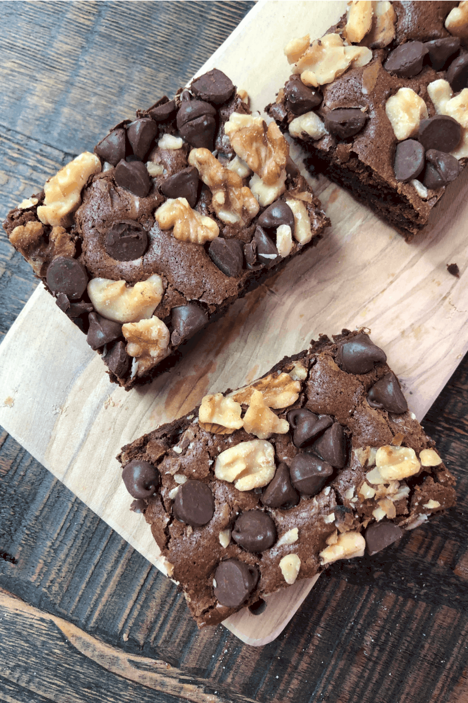

Quick and Easy Brownies

Indulge in the decadence of walnut brownies – rich and fudgy chocolate squares generously studded with crunchy walnuts, offering a perfect blend of textures and flavors.
Ingredients
- 2 cups white sugar
- 1 ½ cups all-purpose flour
- 1 cup butter, melted
- 4 eggs
- ½ cup cocoa powder
- 1 teaspoon vanilla extract
- ½ teaspoon baking powder
- ½ teaspoon baking powder
- ½ cup walnut halves
Directions
- Preheat the oven to 350 degrees F (175 degrees C). Grease a 9x13-inch pan.
- Mix sugar, flour, melted butter, eggs, cocoa powder, vanilla, baking powder, and salt in a large bowl until combined. Spread the batter into the prepared pan. Decorate with walnut halves.
- Bake in the preheated oven until top is dry and edges have started to pull away from the sides of the pan, about 20 to 30 minutes; cool before slicing into squares.
Go to Odins Recipes